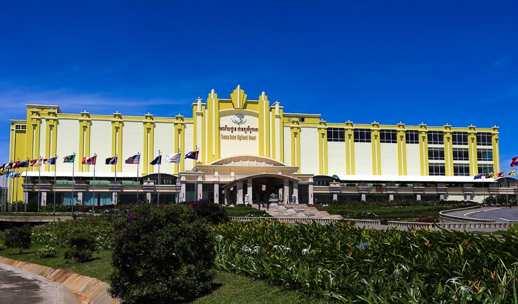
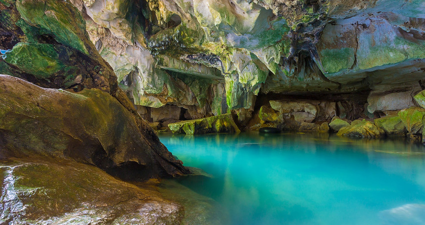

Kompot
This province is located in the Southwest of the country, having an eighty kilometres coastal strip with the Gulf of Thailand. The provincial capital is named Kampot and sits near the base of the abundant green Elephant Mountains and the famous Bokor Hill Station. Compete to crowded Sihanoukville in the North of the province you may find quietness.
Bokor Mountain
Locates at 42Km distance from the provincial town of Kampot, and was found by a French people 1922 during the reign of the King, Sisovath Before, Bokor was a leisure place for French colonists who need to exchange atmosphere from the plain area to the mountain area at seaside. The Mountain of Bokor has 1,075-meter height, good weather and beautiful natural view with big trees and rocks shaping up as animal figure. In Sang Kum Reas Ni Yum, there were public buildings, which look like a city there. On the other side of the road at Bokor Mountain, you see an enormous monument. The 29 meters high Lok Yeay Mao Monument is known as a goddess in Buddhist culture and locals still come here to pray. Legend says that Lok Yeay Mao was the protector of the mountains and coastal area of Cambodia. You can pray to her statue for protection along your journey.
The well known Le Bokor Palace hotel was first opened in 1925 by the French. The hotel that is positioned between the clouds of Bokor Hill in Cambodia was abandoned in 1946 during the Indochina war. After reopening it in 1962 it took only 10 years till it got abandoned again. This time Pol Pots Khmer Rouge forces took over the area and used it as a stronghold. The Khmer Rouge managed to hold the stronghold until the early 90s. After several years of renovation, the Bokor Palace reopened its doors in 2018 to function as a 6-star hotel and casino. And around 12pm or so in the afternoon, fog will start to form on the mountain which will make the temperature drop and the atmosphere very mysterious and magical.
Kompong Trach
Phnom Kampong Trach Cave is located in South Damnak Kantot commune, Kampong Trach district, Kampot province, which is nearly 38 kilometers to the East of Kampot provincial town. In a geological aspect, the Cave is a natural boundary between Cambodia and Vietnam. Phnom Kampot Trach Cave is simply just a short tunnel through the exotic limestone rock formation that connects the outside with the actual circular hole then leads to the sky. According to many visitors, the limestone cave in Kampot is not as grand and marvelous as those surrounding Halong Bay, but they still remain some secret charms which is worth a stopover for all traveling wanting to find out something different.
After coming to the entrance of the cave, you may need to pay young children around 1 USD to let them become your own tour guide that will upgrade your travel experience to a new level. Most of these young guides can communicate in English to bring you a big picture of the history and fantastic stories of the cave, and they also take charge of leading you the way to get through the cave safely. When you came to an open area inside the cave, you will meet a huge reclining Buddha statue dating back to almost 800 years and similar smaller statues around that you can make some wishes for luck, success and blessings. Next to these images is a temple which is under its construction that you can come back later in the future when the construction is done. Another striking characteristic inside the cave drawing visitors attention best is a cool small lake that sometimes can provide you with swimming opportunities.
You may note that the best time to visit Phnom Kampong Trach Cave is in the dry season or just after the rainy season. During the season, the ground will be very wet and dirty. Moreover, it is not really accessible as almost all the networks of caves inside are flooded. Therefore, you need to take some careful research to make sure you are in the best season to visit the cave to have a wonderful trip as you wish. There are also some useful tips you need to bear in mind. You should prepare a flashlight and repellent because the cave is very dark and mostly full of mosquitoes. In addition, it is advisable to bring your own water and even snacks to keep your energy up during the trip as there are no convenient stores along the way to the cave. Do not throw rubbish inside the cave is to help save the environment of the cave. Another important belonging you need to bring on is a camera to catch all the spectacular sceneries of Phnom Kampong Trach Cave. The last one is to always keep track of the guide not to get lost. All in all, it is worth a quick stay at Phnom Kampong Trach Cave for every traveler coming to Kampot for their Cambodia trip. The Cave promises to offer you the greatest experiences with the true natural beauty of Cambodian caves you may never found in other places!